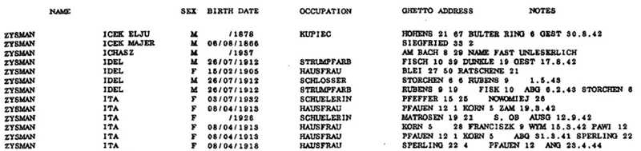

|
· Background · Format of the Database · Acknowledgements · Search the Database |
To best understand this database, it is important that you first read the explanation for Volumes 1-4 of this database: Łódź-Names: A Record of the 240,000 Inhabitants of the Łódź Ghetto. That file describes the database of the first four volumes published in 1994 jointly by the Organization of Former Residents of Łódź in Israel (OFRLI) and Yad Vashem as Łódź-Names: List of the Ghetto Inhabitants, 1940-1944. (Other titles: Lodz - shemot: reshimat toshvei ha-geto, 1940-1944; Shemot Lodz).
This database indexes the fifth volume, also known as the "Supplementary Volume", since it was done separately after the first four were compiled. Volumes 1-4 are in consecutive alphabetical order by surname. Volume Five stands alone, contains 20,136 records, and is also in alphabetical order by surname.
To better understand your search results, read the explanation for volumes one through four, in which a description of the ghetto, street names and name changes, abbreviations, and other properties of both of these databases are clearly defined.
In compiling the online database, the organization of the information maintains the original order, but information is separated into additional data fields to allow greater search options. Addresses and notes which often run together in the original document were each placed into a separate field.
As in the first four books, each record consists of nine fields, with some or all of the following information:
For a more detailed explanation, see: http://www.shtetlinks.jewishgen.org/Lodz/lodzname.htm.
Frequently the demarcation between the address field and the notes was not at all clear. One ran into the other. Street names also appeared in the occupation column. When compiling the database, the format that appeared was followed as best as possible. The numbers were the most difficult, since there were spaces within a number, e.g. 11 was listed as 1 1. A few of the surnames seemed to be missing the final letters, e.g., as in ZYLBERBER. These were left as they appeared in the document. It is up to the researcher to make the determination about the names and notes. When the gender was left blank, it was filled in if obvious by the given name, otherwise it was left blank. Extra digits appear in a few of the dates of birth and obvious errors were recorded in others, such as 7/5/9131. These were left as is. Below is a sample of how the information appears in the original published volume:

When using this volume or the other four volumes to gather information about your families, it is important to corroborate the findings with other records about the individuals. The dates of birth reported may have been misrepresented by the families, since people were often selected or deported based upon their ages. Children were told to state they were older in order to get work in the factories. In desperation, parents often stated their child was older than 10 and grandparents were younger than sixty, in an attempt to save them from being deported to the death camps.
Roni Seibel Liebowitz and Hadassah Lipsius organized the collection and transcription of the data.
We gratefully acknowledge the generosity of the United States Holocaust Memorial Museum (USHMM) in Washington, DC for granting the permission to copy and index this material. Vincent Slatt, chief librarian, helped set up the scanning of the data, and Peter Lande offered guidance when needed.
And finally, thanks to JewishGen Inc. for providing the website and database expertise to make this database accessible. Special thanks to Susan King, Joyce Field, Warren Blatt and Michael Tobias for their continued contributions to Jewish genealogy.
Roni Seibel Liebowitz
July 2007
This database is searchable via both JewishGen's Holocaust Database and the All Poland Database.